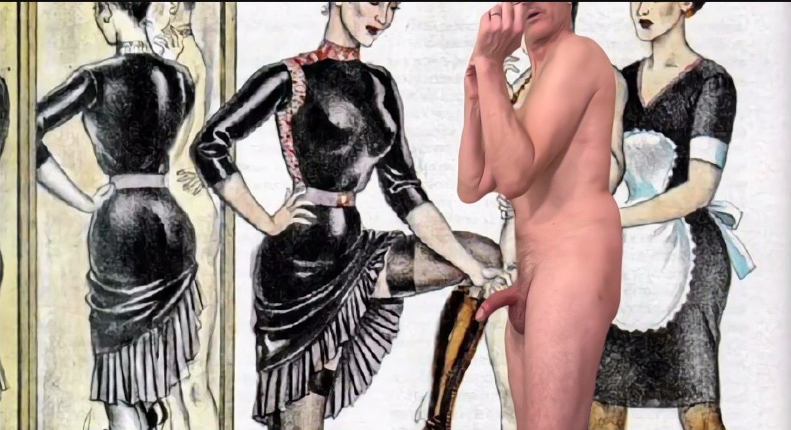
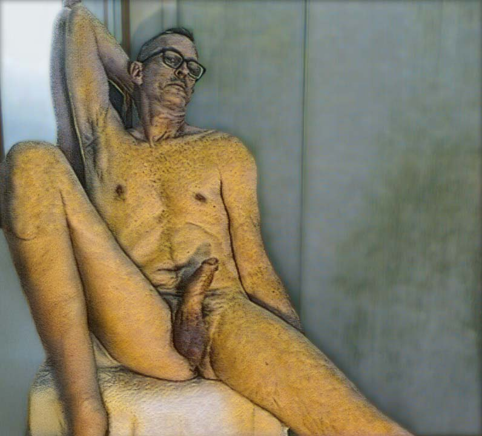
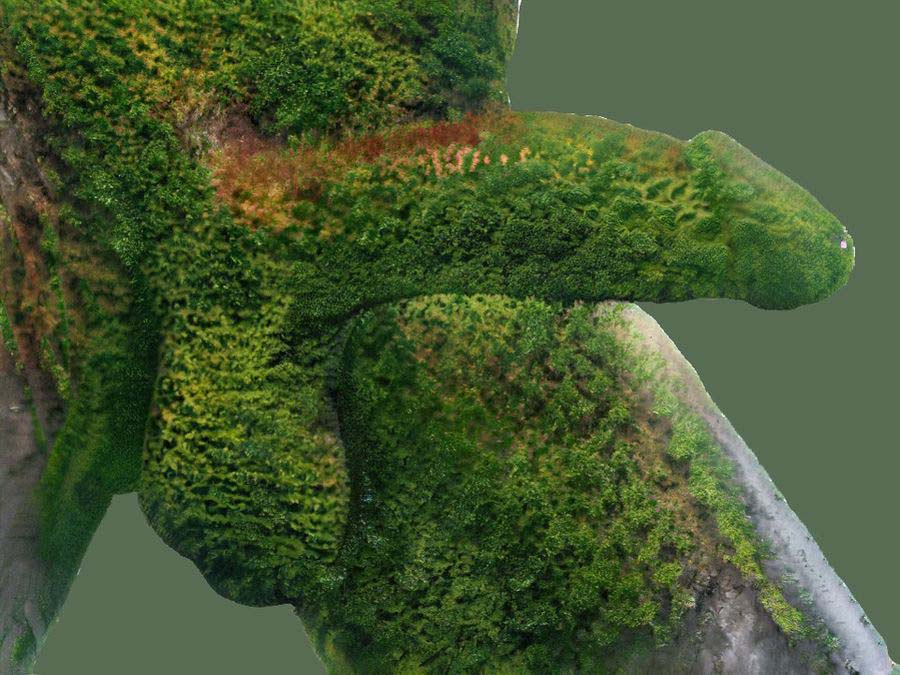
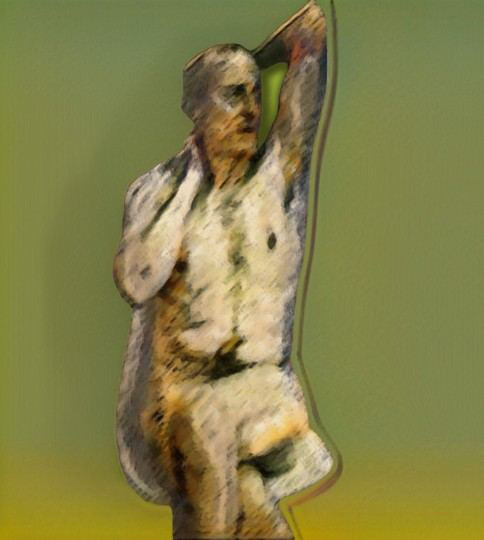
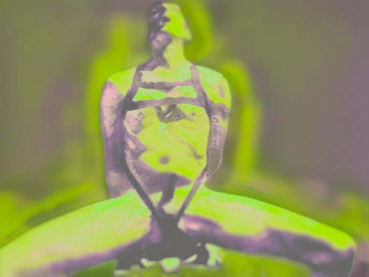
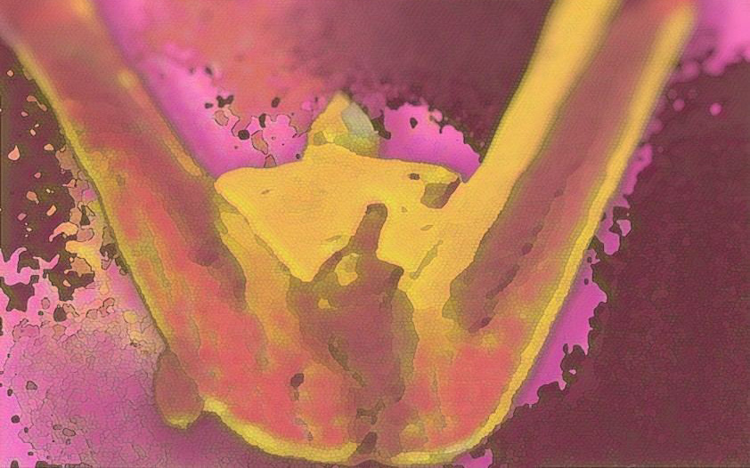
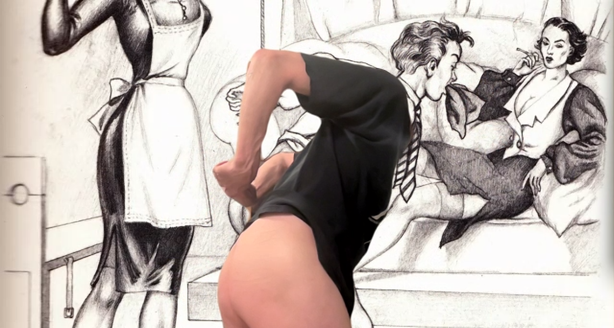
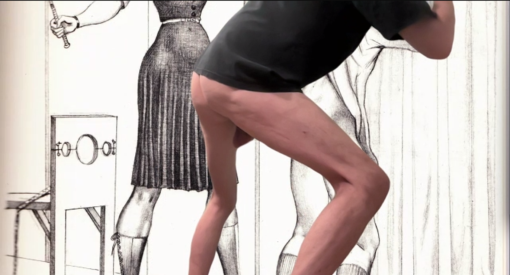
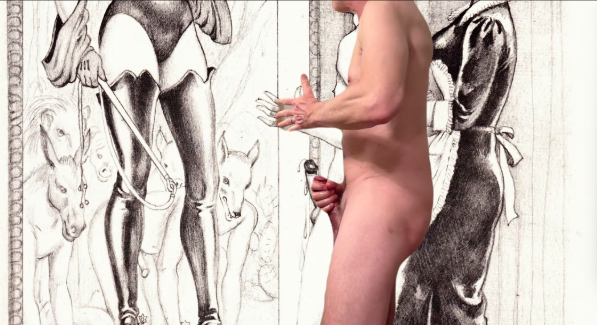
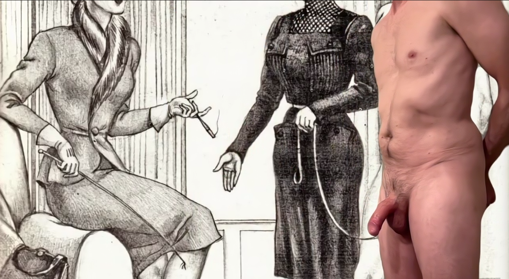

Technosomatic Cyberfeminism 2.0
Solo show proposal for ARC Gallery Athena Fund, Chicago. September 2026.

About the Artist
Nataša Bajc is an architect, artist, and researcher whose practice operates under the framework of Technosomatic Architecture — a methodology that deploys AI as a phenomenological instrument to close the feedback loop between architectural design and embodied human experience. Born in Belgrade and based in Los Angeles since 1997, she holds graduate degrees in architecture and urbanism from the University of Belgrade, algorithmic design from SCI-Arc, computer science from USC, and executive education from Harvard Business School, with early formation at Belgrade's Matematička Gimnazija. She is Co-Founder and CEO of Nexus Hestia Technologies, building sovereign institutional memory tools for the AECO industry. Her artistic work — spanning digital print, found object sculpture, and holographic installation — has been exhibited internationally, including the Venice Biennale of Architecture (2018) and the Beijing Biennale (2025).
Artist Statement
Technosomatic. Two words fused into a single diagnostic instrument. The digital infrastructure that mediates human experience collides with the body — the flesh, the primary site of knowing. Between them: the unthought known. The body already knows what the digital age is doing to it.
This exhibition refuses the asymmetry that has defined Western visual culture for centuries. Breasts are everywhere. The phallus remains a taboo. Female objectification is so woven into culture it's become invisible. Male objectification is actively disallowed.
Technosomatic Cyberfeminism 2.0 reverses this mechanism. Not to equalize. To expose. The female gaze becomes the instrument of rendering the male body into visibility — clinical, unblinking, and permanent.
Interactive Installation: Selection
Move your mouse across the image below. Where you look becomes sharp. Everything else blurs. This is how Selection works: the female gaze renders the male body into clarity, one viewer at a time. Ten images. Ten selections. The gaze is never uniform, never predictable, never repeatable.

10 Works in Exhibition

Male Odalisque
Digital print with overpaint

Triptych Corpus I
Digital print
Triptych Corpus II
Digital print
Triptych Corpus III
Digital print

Reterritorialization
Digital print on canvas

Odalisque Protocol
Digital print on canvas

Restraint System
Digital print on canvas

Otium
Alcohol ink on paper
Male Pleasure Study
Video (compositions)
Selection
Interactive gaze-tracking
Selection: Video Stills Sequence




Precedent Installation
LERATA Festival 2016 — Interactive Art Installation
Mind Map: Gaze as Interface (Los Angeles, February 2016)
Nataša Bajc premiered eye-tracking interactive installation at LERATA Festival for Emerging and Innovative Art. The piece used Tobii EyeX eye-tracker to render a blank wall as the visualization of internal thought. Where the viewer looked, the projector rendered light. The viewer's gaze became the instrument of creation. This precedent demonstrates a decade of expertise in eye-tracking technology, interactive installation, and the use of gaze as a primary artistic medium.
Read more about the LERATA installation